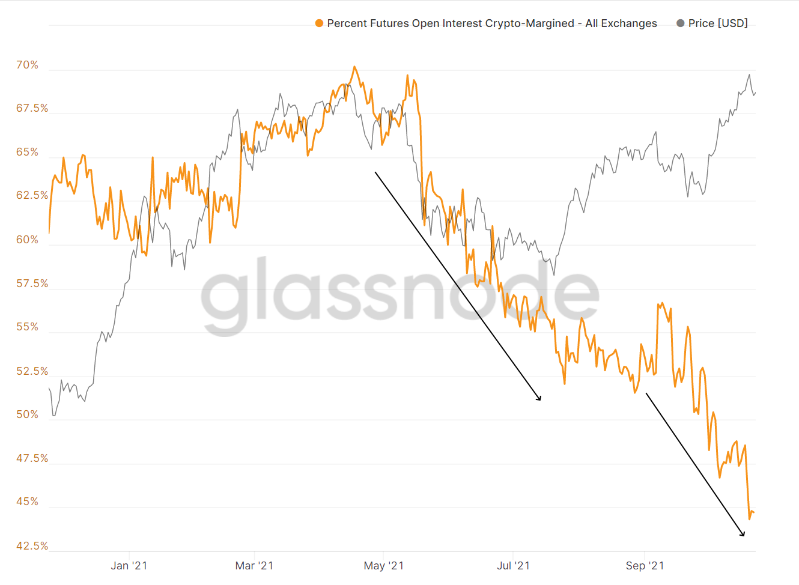
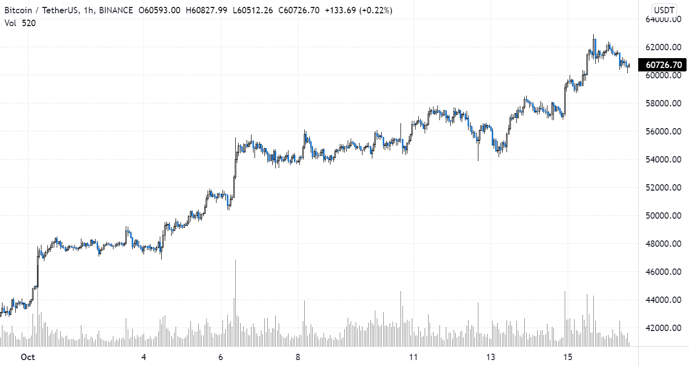

“If you disagree, I can only shrug my shoulders. It's what I have.”
Crypto Market ‘Dollarization’: A New Secular Tailwind
October 23rd, 4:55pm nyc time, 2021.
As the political discussion around stablecoins continues to rage on, one could be forgiven for not knowing how it’s played out in actual crypto markets which this month for the first time saw open interest in stablecoin-margined Bitcoin futures surpass that of their crypto-margined counterparts.
 Read more >Bitcoin's New Exchange (Day)Traded Fund
October 17th, 6:43pm nyc time, 2021.
While nobody has missed the discussion surrounding a possible Bitcoin ETF this year and the subsequent 40% rally this month as prospects materialized, discussion in some circles has already turned to doubt in the success of what has now become the first approved crypto ETF by the SEC - one investing in Bitcoin futures.
 Read more >